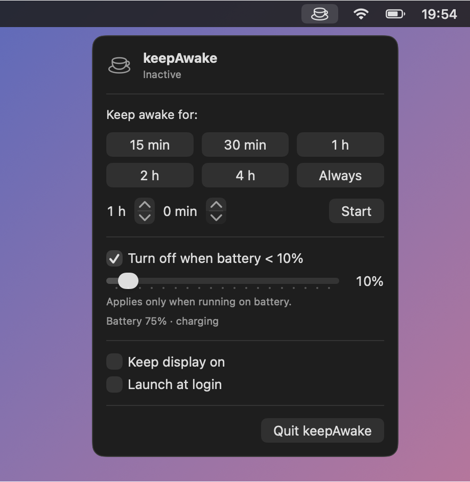
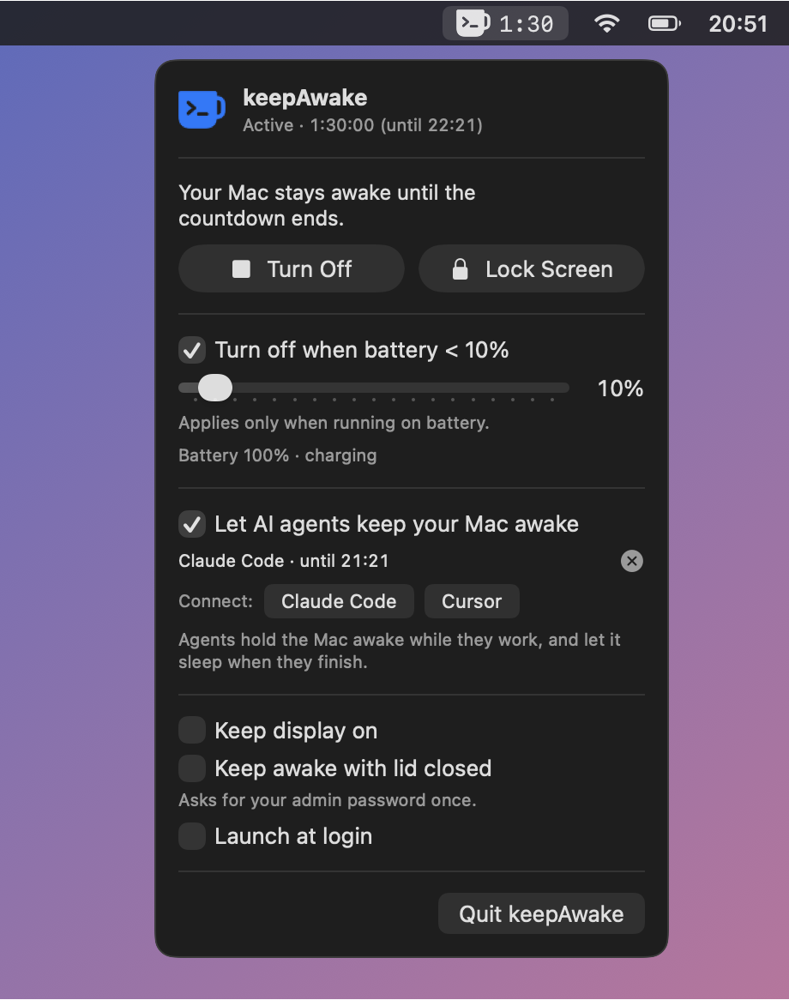
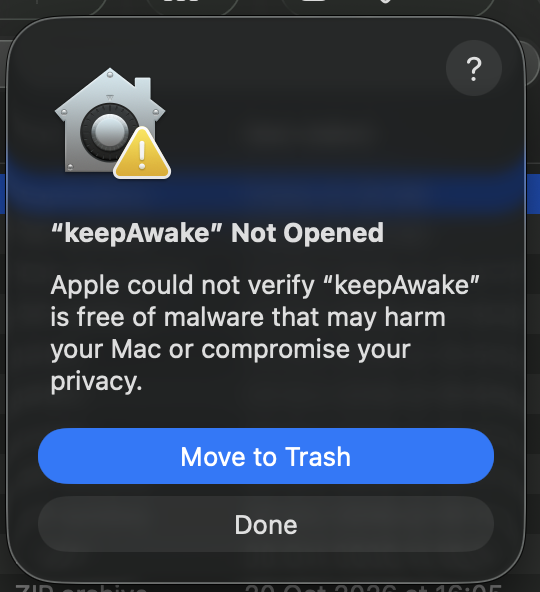

Lives in your menu bar


What it does
Any duration
Presets, a custom time of up to 30 days, or Always. Chosen each time you turn it on.
Battery guard
Turns itself off when the battery drops below your limit, so a forgotten timer never drains your laptop.
Countdown
Remaining time in the menu bar, plus a notification when keepAwake stops on its own.
Keep display on
Optionally stop the screen from dimming and sleeping too.
Launch at login
Off by default; one switch if you want it always there.
Install
-
Download
Click Download for Mac. The file
keepAwake.ziplands in your Downloads folder. -
Unzip
Double-click
keepAwake.zip. macOS unpacks it intokeepAwake.appnext to it. -
Drag it to Applications
Open a new Finder window, choose Applications in the sidebar, and drag
keepAwake.appinto it. -
Allow it in Privacy & Security (first launch only)
keepAwake is from an independent developer and isn't notarized by Apple, so the first time you open it macOS blocks it. This is expected — you just have to give it permission once.

Click Done — not “Move to Trash”. a. Double-click keepAwake in Applications. You'll see “keepAwake” Not Opened. Click Done.
b. Open Apple menu → System Settings → Privacy & Security.
c. Scroll down to the Security section. You'll find this message — click Open Anyway:
d. Enter your password or use Touch ID.
e. macOS asks one more time — click Open Anyway. keepAwake starts and the mug appears in the menu bar.
No “Open Anyway” button? It only shows up for about an hour after macOS blocked the app. Double-click keepAwake again, click Done, and go back to Privacy & Security.
You don't need to change “Allow applications from” or turn off any protection — the button above allows only keepAwake.You'll do this once per download, so again after installing an update. keepAwake is free and open source — you can read every line of the source code or build it yourself.
Prefer Terminal?
Instead of steps a–e, remove the download quarantine flag, then open the app normally:
xattr -dr com.apple.quarantine /Applications/keepAwake.app -
Click the mug in the menu bar
There's no window or Dock icon — keepAwake lives in the menu bar at the top right. Pick a duration and you're done. Allow notifications if you want to know when it stops on its own.
Update & uninstall
Update
Quit keepAwake from its menu, download the new version, and replace the app in Applications.
Uninstall
Quit keepAwake and move it from Applications to the Bin. Settings live in ~/Library/Containers/com.michalkrecisz.keepAwake.
Build it yourself
Needs only the Xcode Command Line Tools. See the README.